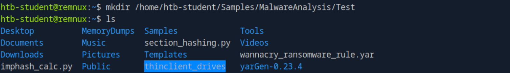
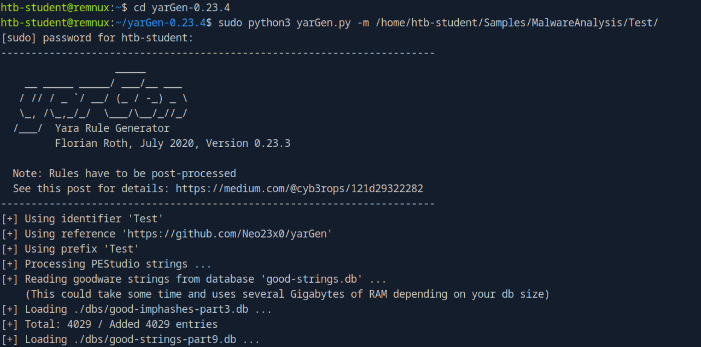
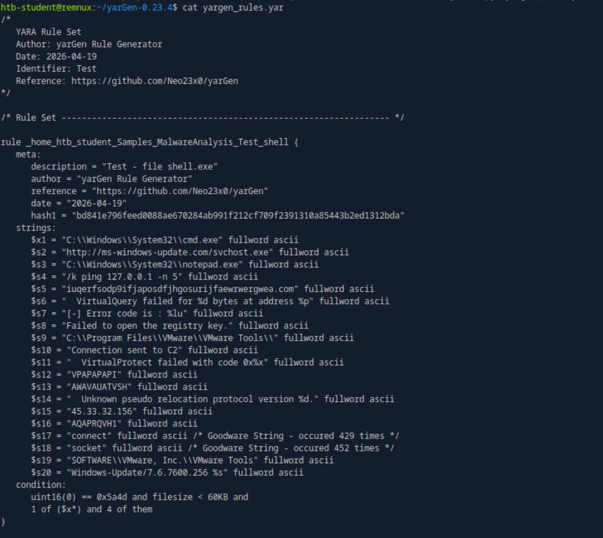
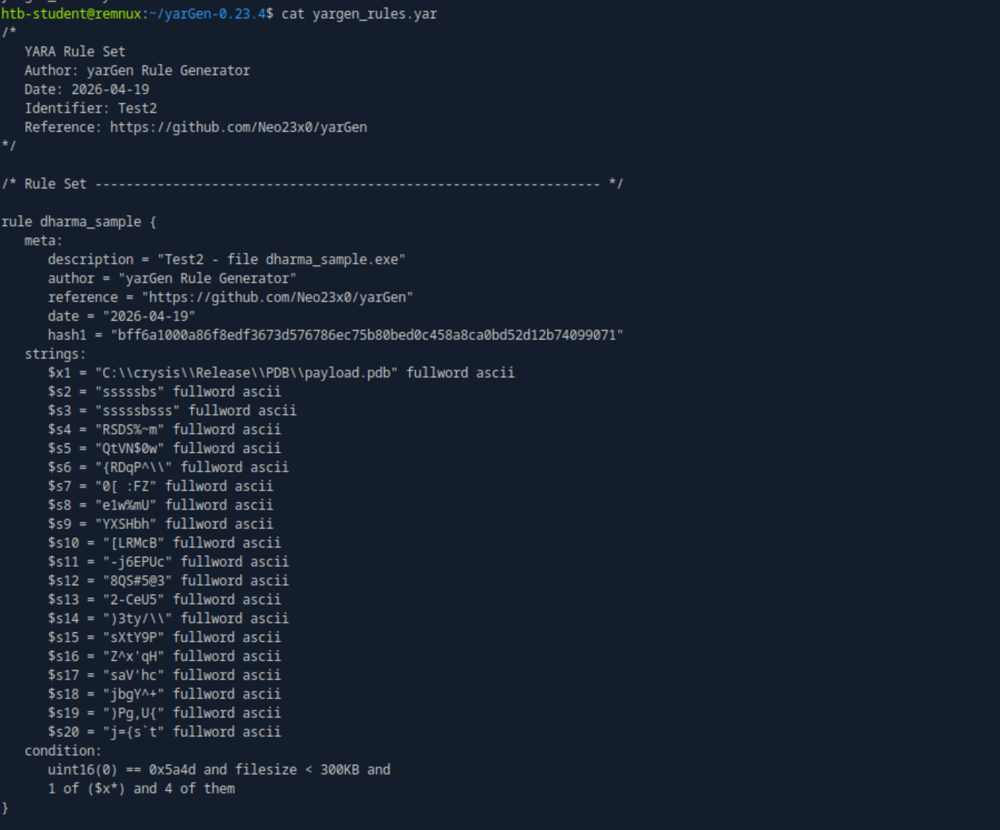

🔍 Detection Engineering
- YARA rule development
- yarGen automated generation
- IOC pattern matching
- Rule validation and testing
🧪 Malware Analysis
- Static string extraction
- Unique IOC identification
- Malware family attribution
- Hash-based fingerprinting
📋 Sigma & Sysmon
- Sigma rule authoring
- Sysmon event analysis
- Process creation detection
- SIEM-ready rule format
🎯 Threat Intelligence
- C2 infrastructure IOCs
- Malware family correlation
- TTP-based detection logic
- MITRE ATT&CK mapping
📋 Investigation Summary
Background
Detection rules are the practical end product of malware analysis. After spending time understanding what a malware sample does — through static analysis, dynamic analysis, and code analysis — the final step is converting those findings into automated detection logic that identifies the same threat across an entire network without any manual investigation.
In this lab I worked with two real malware samples: shell.exe — a C2 dropper that performs sandbox detection, downloads a second-stage payload, establishes registry persistence, and injects shellcode into notepad.exe — and dharma_sample.exe — a sample from the Dharma/Crysis ransomware family. Both samples were previously fully analysed using static strings analysis and IDA code analysis. This post covers turning those findings into working YARA rules.
What is YARA?
YARA (Yet Another Recursive Acronym) is an open-source pattern matching tool used to identify and classify malware in files, processes, and memory. Think of it as a highly advanced search — instead of searching for one word in one document, you define complex patterns that fire across thousands of files simultaneously.
A YARA rule has three sections:
rule ExampleMalwareDetection {
meta:
// Documentation only — does not affect detection logic
description = "Detects shell.exe C2 dropper"
author = "Waqas Ibrahim"
date = "2026-04-19"
strings:
// Patterns to match — text, hex bytes, or regex
$a = "http://ms-windows-update.com/svchost.exe" fullword ascii
$b = "45.33.32.156" fullword ascii
$c = "Connection sent to C2" fullword ascii
condition:
// When to fire the alert
uint16(0) == 0x5a4d and // File starts with MZ = Windows PE
filesize < 60KB and // Must be under 60KB
2 of them // At least 2 strings must match
}| Keyword | What it means |
|---|---|
fullword | Must be a complete word — not embedded inside a larger string |
ascii | Standard plain text string |
wide | Unicode string (Windows commonly stores strings in unicode) |
nocase | Case insensitive — matches regardless of capitalisation |
uint16(0) == 0x5a4d | First two bytes of file are MZ — confirms Windows executable |
1 of ($x*) | At least one string with the $x prefix must match |
4 of them | At least 4 strings from the strings section must match |
IOCs Identified During Previous Analysis
Before generating any rule, I had already identified the following IOCs through static strings analysis and code analysis in IDA. Every one of these became a candidate detection string for the YARA rule. The key principle is: YARA rules are only as good as the IOC extraction that preceded them.
Step-by-Step: Generating the YARA Rule with yarGen
yarGen is a tool by Florian Roth that automates YARA rule generation. It extracts all strings from a malware sample, then filters them against a database of over 12 million strings found in legitimate software. What remains are strings unique to the malware — strong candidates for a detection rule.
yarGen analyses everything inside the folder you point it at. Creating a dedicated Test directory ensures it only processes our target sample.
mkdir /home/htb-student/Samples/MalwareAnalysis/Test
cp /home/htb-student/Samples/MalwareAnalysis/shell.exe \
/home/htb-student/Samples/MalwareAnalysis/Test/
yarGen loads its goodware databases (12M+ strings from legitimate software), scans shell.exe for all strings, removes anything that appears in normal programs, then outputs a ready-to-use YARA rule containing only malware-unique strings.
cd ~/yarGen-0.23.4
sudo python3 yarGen.py -m /home/htb-student/Samples/MalwareAnalysis/Test/The -m flag specifies the malware folder. Database loading takes a few minutes — this filtering step is what makes the output precise rather than noisy.

yarGen outputs a file named yargen_rules.yar. Reading through it, every string selected directly maps to IOCs I had already identified during code analysis — confirming the rule is well-targeted and meaningful rather than full of random strings.
cat yargen_rules.yar
The Generated Rule — Fully Annotated
Below is the complete generated rule with annotations explaining why each string is significant as a detection indicator:
rule _home_htb_student_Samples_MalwareAnalysis_Test_shell {
meta:
description = "Test - file shell.exe"
author = "yarGen Rule Generator"
date = "2026-04-19"
hash1 = "bd841e796feed0088ae670284ab991f212cf709f2391310a85443b2ed1312bda"
strings:
$x1 = "C:\\Windows\\System32\\cmd.exe" fullword ascii
// cmd.exe used to execute ping sleep — delays C2 connection
$s2 = "http://ms-windows-update.com/svchost.exe" fullword ascii
// C2 download URL — second stage payload retrieved from here
$s4 = "/k ping 127.0.0.1 -n 5" fullword ascii
// 5-second delay mechanism before C2 activity begins
$s5 = "iuqerfsodp9ifjaposdfjhgosurijfaewrwergwea.com" fullword ascii
// WannaCry kill switch domain — DNS sandbox detection check
$s9 = "C:\\Program Files\\VMware\\VMware Tools\\" fullword ascii
// File path checked for VMware installation — VM detection
$s10 = "Connection sent to C2" fullword ascii
// MessageBox displayed after successful notepad.exe process injection
$s14 = "45.33.32.156" fullword ascii
// C2 IP address — TCP connectivity check on port 31337
$s19 = "SOFTWARE\\VMware, Inc.\\VMware Tools" fullword ascii
// Registry key queried via RegOpenKeyExA for sandbox detection
$s20 = "Windows-Update/7.6.7600.256 %s" fullword ascii
// Custom HTTP User-Agent — %s replaced with GetComputerNameA result
condition:
uint16(0) == 0x5a4d and // Must be a Windows PE file (starts with MZ)
filesize < 60KB and // Sample is small — dropper stage only
1 of ($x*) and // cmd.exe string must be present ($x = high confidence)
4 of them // At least 4 total strings must match
}✅ Key Observation
Every string in this rule was an IOC discovered during earlier code analysis in IDA and confirmed through dynamic analysis with Wireshark and ProcMon. The YARA rule is a formalised, automated version of those manual findings — directly converting analyst knowledge into deployable detection logic.
Running the rule against the full MalwareAnalysis directory confirms shell.exe is detected and no false positives fire against other files present.
yara /home/htb-student/yarGen-0.23.4/yargen_rules.yar \
/home/htb-student/Samples/MalwareAnalysis/
Output:
_home_htb_student_Samples_MalwareAnalysis_Test_shell
/home/htb-student/Samples/MalwareAnalysis/shell.exeRepeat: YARA Rule for Dharma Ransomware
I repeated the exact same workflow for dharma_sample.exe — a sample from the Dharma/Crysis ransomware family. The most notable string yarGen selected was one I had already flagged during strings analysis: a PDB debug path accidentally left behind by the developer.

rule dharma_sample {
meta:
description = "Test2 - file dharma_sample.exe"
date = "2026-04-19"
hash1 = "bff6a1000a86f8edf3673d576786ec75b80bed0c458a8ca0bd52d12b74099071"
strings:
$x1 = "C:\\crysis\\Release\\PDB\\payload.pdb" fullword ascii
// PDB debug path — directly attributes sample to Crysis/Dharma family
// + 19 additional unique strings automatically selected by yarGen
condition:
uint16(0) == 0x5a4d and filesize < 300KB and
1 of ($x*) and 4 of them
}✅ Malware Family Attribution from One String
The PDB path C:\crysis\Release\PDB\payload.pdb directly links dharma_sample.exe to the Crysis/Dharma ransomware family. This single artifact — found during basic strings analysis before touching a debugger — provided complete malware family attribution. This is why thorough static analysis always comes first.
Sigma Rules — Detecting Behaviour in Event Logs
While YARA detects malicious files, Sigma detects malicious behaviour in event logs. Sigma rules are written once in a standardised format and can be deployed to any SIEM platform — Splunk, Elastic, Wazuh, Microsoft Sentinel — making them highly portable across tools.
Based on what shell.exe does at runtime, here is a Sigma rule targeting the file-drop behaviour captured in Sysmon Event ID 11:
title: Suspicious svchost.exe Dropped in User Temp Directory
status: experimental
description: >
Detects svchost.exe being created in the user Temp directory
by a non-system process. Indicative of dropper malware behaviour
as seen in shell.exe analysis.
logsource:
category: file_event
product: windows
detection:
selection:
TargetFilename|endswith: '\AppData\Local\Temp\svchost.exe'
condition: selection
falsepositives:
- Legitimate applications dropping components to Temp (very rare)
level: high
tags:
- attack.execution
- attack.t1105Sysmon Evidence — What the Logs Confirmed
With Sysmon running during dynamic analysis, the following events were captured in response to shell.exe executing. Each Sysmon event directly corresponds to an IOC identified during static analysis — cross-validating the findings across two independent methods.
| Sysmon Event ID | What Happened | shell.exe Activity | MITRE |
|---|---|---|---|
| Event ID 1 — Process Created | New process spawned | svchost.exe created in TEMP — parent was shell.exe | T1105 |
| Event ID 11 — File Created | File written to disk | shell.exe (PID 6508) dropped svchost.exe to Temp directory | T1105 |
| Event ID 3 — Network Connection | TCP connection made | Connected to ms-windows-update.com:80 and 45.33.32.156:31337 | T1071.001 |
| Event ID 10 — Process Access | Process opened another | shell.exe accessed notepad.exe with full access rights (0x1F3FFF) | T1055 |
| Event ID 13 — Registry Modified | Registry value written | WindowsUpdater persistence key added to CurrentVersion\Run | T1547.001 |
Complete IOC Summary — shell.exe
| Type | IOC Value | How Found |
|---|---|---|
| SHA256 | bd841e796feed0088ae670284ab991f212cf709f2391310a85443b2ed1312bda | sha256sum command |
| Domain | ms-windows-update.com | strings analysis + IDA + Wireshark |
| Domain | iuqerfsodp9ifjaposdfjhgosurijfaewrwergwea.com | strings + IDA getaddrinfo call |
| IP:Port | 45.33.32.156:31337 | IDA connect() call + Wireshark |
| URL | http://ms-windows-update.com/svchost.exe | IDA InternetOpenUrlA call |
| File Path | %TEMP%\svchost.exe | IDA GetTempPath + Sysmon Event 11 |
| Registry Key | SOFTWARE\Microsoft\Windows\CurrentVersion\Run — WindowsUpdater | IDA RegSetValueExA + Sysmon Event 13 |
| User-Agent | Windows-Update/7.6.7600.256 [HOSTNAME] | IDA sprintf + Wireshark HTTP stream |
| Registry Check | SOFTWARE\VMware, Inc.\VMware Tools | IDA RegOpenKeyExA + ProcMon |
MITRE ATT&CK Mapping
| Technique | ID | Tactic | Evidence from Analysis |
|---|---|---|---|
| Virtualization/Sandbox Evasion: System Checks | T1497.001 | Defense Evasion | VMware Tools registry check via RegOpenKeyExA |
| Ingress Tool Transfer | T1105 | Command and Control | Downloads svchost.exe from ms-windows-update.com |
| Process Injection | T1055 | Defense Evasion / Execution | Shellcode injected into notepad.exe via VirtualAllocEx + WriteProcessMemory |
| Boot or Logon Autostart: Registry Run Keys | T1547.001 | Persistence | WindowsUpdater value added to CurrentVersion\Run |
| Application Layer Protocol: Web Protocols | T1071.001 | Command and Control | HTTP C2 with custom User-Agent including hostname |
| System Binary Proxy Execution | T1218 | Defense Evasion | cmd.exe /k ping — used as delay mechanism |
Conclusion
This walkthrough demonstrates the complete detection engineering workflow that follows malware analysis. The process is linear and repeatable: analyse the sample → extract IOCs → generate detection rules → validate → deploy.
Static Analysis → IOC Extraction
strings command and IDA code analysis revealed C2 URLs, IP addresses, registry paths, and unique behavioral strings
Dynamic Analysis → IOC Validation
Sysmon logs and Wireshark traffic independently confirmed every IOC found during static analysis — cross-validated across two methods
IOCs → YARA Rule Generation
yarGen automated rule creation — filtered against 12M+ legitimate software strings to eliminate noise and produce precise detection logic
Validation → Confirmed Detection
Rules successfully detected both shell.exe and dharma_sample.exe with zero false positives — ready for deployment to production
2 Samples Analysed
shell.exe (C2 dropper) and dharma_sample.exe (ransomware)
8+ IOCs Extracted
Domains, IPs, URLs, file paths, registry keys, user-agents
2 YARA Rules
Generated, annotated and validated against live samples
6 MITRE Techniques
Mapped across evasion, C2, execution and persistence